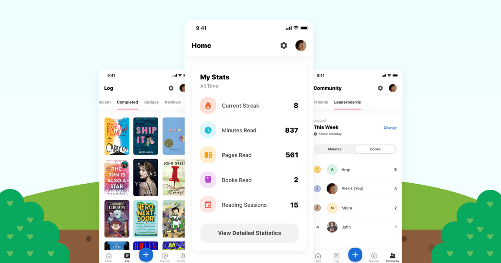

UX Research · Instructional Design · Cross-Functional Collaboration
Beanstack Training Video
Partnered with Arlington Public Library to identify barriers to Beanstack adoption and engagement, then designed a training solution that improved onboarding and supported long-term participation.

Beanstack reading tracker app, used across all seven Arlington Public Library locations. Fall 2025.
Overview
Beanstack is a reading tracker app used across all seven Arlington Public Library locations. It supports summer reading challenges, school-year programs, and community literacy initiatives for patrons of all ages. Despite strong sign-up numbers, the library consistently saw patrons disengage after creating an account and stop logging their reading within days or weeks.
Our four-person team was tasked with identifying the root causes of that drop-off and designing a training intervention to address them. We conducted stakeholder interviews, evaluated the Beanstack experience firsthand, and developed a comprehensive training strategy, video outline, and evaluation framework for Arlington Public Library leadership.
We then partnered with a video production class to produce the final training video, providing the content outline, scripting guidance, feedback, and iterative reviews throughout production. This collaboration ensured the final deliverable remained aligned with our research findings and Arlington Public Library's goals.
The Design Challenge
How might we help Arlington Public Library patrons move beyond simply signing up for Beanstack and develop the knowledge, confidence, and habits needed to engage with the app consistently over time?
The Problem
The library had already succeeded in getting patrons to download the app and create accounts. The problem was what happened next. Staff observed a recurring pattern: families would register for a reading challenge with enthusiasm, then quietly disengage before completing it. The app was being adopted, but not used.
The library had approximately 9,000 registered patrons. While roughly 5,400 participated in the summer reading challenge, only about 3,400 completed it. This 37% drop-off highlighted a significant engagement gap between registration and long-term participation.
Through stakeholder interviews, product evaluation, and research, we identified three key factors contributing to that disengagement:
Technology Barriers
Less tech-savvy patrons struggled to navigate the app independently. Features like bulk logging were not intuitive for first-time users, creating frustration early in the experience.
Multiple Account Confusion
Families had to manage separate Beanstack accounts through both their school and the library, creating confusion and making participation harder to maintain.
School & Library Account Confusion
Many school districts also use Beanstack, creating confusion when families had to manage separate accounts for both. This extra friction made consistent logging feel like a burden.
My Contributions
Our team collaborated across every phase of the project. My primary contributions included documenting stakeholder interviews, analyzing the Beanstack user experience, developing the training content outline, and reviewing video deliverables throughout production.
Client Interview Notes
Took detailed notes during our field visit and interview with Julie Crisafulli and Miranda Want at Arlington Public Library, capturing direct quotes, pain points, and observational insights that informed our research findings.
User Flow Documentation/h3>
Went through the Beanstack app step by step, documenting the exact navigation path for every key task: account creation, logging, adding readers, joining challenges, and enabling notifications. This documentation became the foundation for the training content and video script.
Content Outline
Contributed to the structured six-step content outline that the video production team used to execute the final training video, ensuring the training content addressed the most common patron challenges in a logical learning sequence.
Cross-Team Collaboration
Provided feedback to the video production team during the recording and editing process, reviewing video drafts against our content requirements to ensure accuracy, clarity, and alignment with the training goals.
Research and Discovery
Before designing any solution, we needed to understand both the organizational context and the real barriers patrons faced. Our research process combined two methods: a structured client interview and field research through the app itself.
Client Interview
On September 4, 2025, we visited Arlington Public Library and interviewed Julie Crisafulli, Special Projects and Library Service Manager, and Miranda Want, Training Manager. Both oversee Beanstack daily and served as our key consultants for understanding the program's goals and problem areas. We asked nine structured questions covering Beanstack's history, target audiences, known challenges, staff training, and school partnerships.
Field Research
Each team member created a Beanstack account and completed core tasks such as account creation, logging reading, joining challenges, and managing reader profiles. Experiencing the app firsthand helped us validate patron pain points and distinguish usability issues from knowledge gaps that could be addressed through training.
What the Research Told Us
Sign-up was not the problem. Getting patrons to download and register was already working. The real drop-off happened after account creation, when patrons were left to explore on their own.
The app had what users needed but hid it. Features like multi-reader management, bulk logging, and reading reminders existed, but were not discoverable for new users without guidance.
Consistency needed to be designed for. A one-time tutorial would not be enough. Patrons needed to understand not just how to use the app, but how to build habits around it through challenges, badges, and reminders.
The audience ranged from children to seniors. Any training solution had to be accessible to users with varying levels of tech comfort, not just digitally fluent adults.
Training Design
Based on our needs assessment, we made a key decision early: the training could not just be a tutorial. Teaching patrons how to create an account would not fix the engagement problem. The training had to go beyond the basics and address the habits and motivation needed to keep using the app long-term.
Our Two Training Goals
Goal 1: Help library patrons enhance their understanding of how the Beanstack app works, so they can create an account, log reading, and navigate challenges without assistance.
Goal 2: Promote consistent engagement with the app, so patrons form reading habits through reminders, challenges, badges, and social features that keep them motivated over time.
Content Outline: Six Steps
We structured the training video around six steps, ordered to move patrons from foundational knowledge to long-term engagement strategies:
This sequence follows instructional design principles: foundational knowledge comes first, followed by practical skills, then strategies that support long-term behavior change. Patrons leave knowing not just how to use the app, but why the features are worth returning to.
Adult Learning Techniques
Relevance
Every step in the training connected directly to a problem patrons actually experienced, like managing multiple readers or finding challenges, so each instruction had a clear reason behind it.
Organization
Content moved from basic to advanced, starting with download and account creation before introducing habit-building features like reminders and the community leaderboard.
Redundancy
Key steps like logging reading and locating challenges were repeated across multiple parts of the training to reinforce the process and reduce confusion for new users.
Hands-On Engagement
The video was designed so patrons could follow along on their own device during the session, practicing each task in real time rather than watching passively.
The Training Video
We partnered with a video production class to bring the training solution to life. Our team developed the content outline, script, learning objectives, and evaluation framework, then reviewed recordings and edits throughout production to ensure the final video aligned with our training goals. While the production team handled filming and editing, we remained responsible for the instructional design and content strategy behind the experience.
Final training video produced in collaboration with the video production team. Fall 2025.
Evaluation Framework
Because the goal was long-term engagement—not just video completion—we developed an evaluation framework to measure whether patrons understood the content, felt confident using the app, and could successfully apply what they learned.
Knowledge (Cognitive)
Question: Can patrons explain how the app works?
Measure: Open-ended questions assessing understanding of app features and reading-tracking options.
Confidence & Motivation (Affective)
Question: Do patrons feel prepared and motivated to continue using the app? Measure: Likert-scale survey measuring confidence, perceived value, and motivation.
Application (Behavioral)
Question: Can patrons successfully complete key tasks independently? Measure: Observation and self-report measures tracking account management, reading logs, reminders, and challenges.
Beyond the post-training survey, we also proposed tracking behavioral data from the library's platform, including video views, average watch time, and click-throughs to Beanstack sign-up links. Library staff could additionally observe patrons attempting to use the app after watching, providing a practical real-world measure of the training's impact.
Reflection
UX is not limited to digital interfaces. This project was not about designing an interface, but the process was entirely UX: identifying real user pain points through research, designing a solution that addresses root causes instead of symptoms, and evaluating whether it worked.
Designing for consistency is harder than designing for first use. The answer was designing for long-term engagement, not just onboarding. Challenges, badges, reminders, and social features became part of the training because they helped reinforce the behaviors users needed to build over time.
Cross-functional handoffs require thorough documentation. Handling off our content outline to the video production team taught me how much clarity matters in a handoff. Vague instructions created confusion; specific, step-by-step documentation produced results that matched our intent. That experience reinforced the importance of clear documentation, detailed requirements, and shared understanding across teams. Those skills transfer directly to designer-developer collaboration.
What I would do differently: While staff provided valuable insight, we relied on them as proxies for patron behavior. Talking directly to a few actual Beanstack users, even informally, would have given us richer insight into the specific moments where the experience broke down and made our training content sharper.